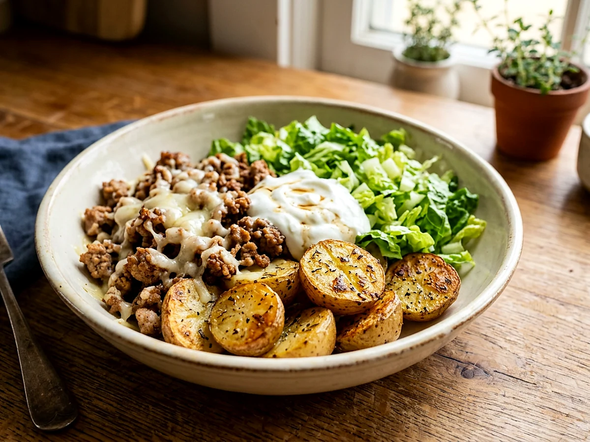

Turkey Potato Bowlwith Garden Potatoes
Roasted potatoes, crisp-edged ground turkey, melted white cheddar, Greek yogurt, and romaine in one filling bowl.

Watch the recipe
Cook it with Jadon.
Play the video here, then keep the measured ingredient list and full method open beside you while you cook.
Open on YouTube ↗Cook in this order
Method
- Heat the oven to 425°F. Line a sheet pan with foil. Toss the potato halves with 1 tablespoon avocado oil, ¾ teaspoon salt, ½ teaspoon pepper, and ¾ teaspoon garlic powder. Arrange cut-side up.
- Roast for 30 minutes. Flip the potatoes and continue roasting for 5–15 minutes, until lightly golden and easily pierced with a fork.
- While the potatoes roast, heat the remaining tablespoon avocado oil in a skillet over medium-high heat. Press the turkey into an even layer and season with the remaining salt, pepper, garlic powder, and the paprika.
- Let the turkey brown for 3–4 minutes before breaking it apart. Continue cooking until no pink remains and the browned edges are crisp.
- Divide the roasted potatoes among four bowls. Spoon hot turkey over them and immediately add the white cheddar so it melts.
- Top each bowl with Greek yogurt and romaine. Finish with balsamic vinegar and olive oil.
Food-safety checkGround turkey must reach 165°F. Check the thickest portion before serving.
Ready for the next one?
Browse every Jadon Cooks recipe and watch the matching video.
See all recipes